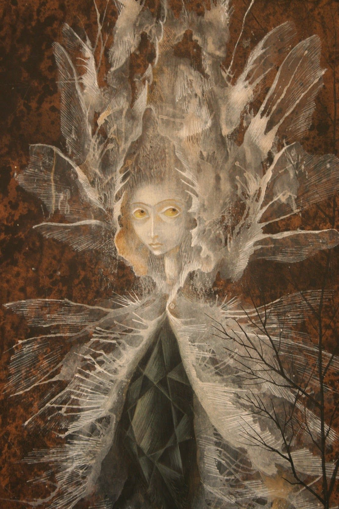

16 У входа в кроличью нору
Примерно в эти дни меня предупредили заранее - ночью предстоит серьезная процедура. К утру самочувствие сильно ухудшилось, весь день лежала, что-то происходило. С головой происходило что-то необычное. Я начала воспринимать их иначе.
- Что вы сделали?
- В некотором смысле перенастроили связь. Если до этого момента мы всё время были рядом, то теперь в этом необходимости нет - ты нас будешь слышать из любого места.
Днем гуляла в лесу.
- Подумай еще раз хорошенько, - прилетела мысль по телепатическому каналу, - Может, тебе не надо к нам идти? Давай мы тебе предложим здесь что-нибудь другое. Чего ты хочешь? У нас большие возможности, мы можем многое. Может, хочешь популярности, влияния? Или поиграть во что-то потустороннее, например, изобразить из себя мага, астролога, медиума? Мы будем снабжать информацией. Но имей в виду, клиентов мы будем выбирать во многих случаях сами, поскольку нам необходимо проталкивать нужную нам информацию. Подумай, зачем тебе к нам идти?
- Здесь я и сама могу всего добиться. Я вам уже сказала, что мне надо. Сколько раз повторять: я хочу попасть в ваш мир! Деньги, слава и власть - мимо. Вам все равно нечего мне предложить.
- А если найдем?
- Ищите. Но это бесполезно.
- Как скажешь. Раз уж ты такая упрямая, то слушай наши условия. Ты сможешь жить у нас какое-то время, но отпускать мы будем тебя тогда, когда сочтем нужным. К тому же, говорим честно - тебе может у нас не понравиться.
- Я смогу в вашем мире у вас учиться?
- Вся жизнь - урок... Но наше дело - предупредить.
- Вы говорите, мне там будет плохо? У вас там что - аналог ада? У меня было условие - я хочу в нем жить на равных с вами правах.
- Конечно. Хотя, поначалу ты будешь ограничена в информации, мы не сможем открыть тебе сразу все. К тому же, пока ты будешь учиться, ты будешь заниматься не самой интересной деятельностью.
- А учиться я буду вечно?
- Мы все учимся чему-то вечно... И все же, ты просишь кота в мешке. Ты это понимаешь?
- Да. Я хочу знать больше о вашем мире.
- Мы уже рассказали тебе то, что считали нужным.
- Вам самим хорошо в вашем мире?
- Конечно. Мы его очень любим. Это главное, что у нас есть. Но мы отличаемся от тебя. Ты нас хорошо понимаешь потому, что мы встроили тебе перекодировщик. На самом деле, ты сейчас внутри мыслишь как мы. Мыслишь фразами нашего языка.
- Значит, скоро смогу и думать, как вы.
- Возможно. И все-таки. Вернемся к нашим условиям. Ты можешь периодически по ночам бывать у нас, но на земле ты будешь выполнять ту деятельность, которая полезна нашей семье.
- Что вы хотите, чтобы я делала?
- Разберемся позже. Такие условия. Согласна?
- Ясно. Но в начале - вы меня берете с собой. Я осматриваюсь и решаю - хочу ли я у вас бывать. А дальше решаем, что вы хотите взамен. Только так. Никакой работы для вас до того, как побываю у вас, я выполнять не буду.
- Мы тебя поняли.
Последовало несколько ночей, в течение которых мне говорили визуализировать разные предметы. Как объяснили, нужно было развить свои способности до такой степени, чтобы проходить между мирами. Это было сложно - нужно было представлять как можно ярче, как можно громче.
- Попытайся визуализировать как можно больше движущихся ярких предметов, издающих звуки.
С движущимися предметами почти не получалось. Я не так много видела в жизни множество одновременно движущихся объектов. Даже юла и та получалась плохо. Раньше я занималась только визуализацией статичных объектов. Поэтому решили перейти к ярким цветам. Дело пошло лучше, но все равно было сложно.
- Попытайся визуализировать что-нибудь, что могло бы быть входом в наш мир.
Я выбрала яркий туннель с черной дырой, но как потом оказалось, удерживать этот образ долго довольно сложно, поэтому решили упростить задачу. Долго выбирали объект. Почему-то удерживать любой образ стало очень сложно. Ведь раньше у меня так хорошо получалась визуализация! Что случилось? Может, так сложно их удерживать в состоянии засыпания?
Сначала решила удерживать лимон - очень простой образ в бодрствующем состоянии. Потом - яйцо. Этот образ был самым простым, на нем решили остановиться. В это время мне сказали лечь, вытянуться и не отвлекаться.
Я удерживала внимание на яйце, а в это время со мной что-то начало происходить.
Я почувствовала, что руки начали удлиняться, затем ноги.
- Визуализируй, не отвлекайся! Мы все сделаем сами.
Потом начались иные изменения. Я все ждала, когда же случится переход. После стольких неудачных попыток визуализации, вроде вот наконец-то... получается! Уже почти чувствую тело в другом мире... и облом!
- Сейчас мы тебе поможем, не удивляйся, нам нужно перехватить твои движения, чтобы работа шла быстрее. Ты сама плохо справлялась с визуализацией, мы ждали от тебя большего. Поэтому нам придется тебе помочь. Ты согласна?
- Конечно, я буду благодарна, только бы к вам попасть.
Я даже не почувствовала подвох. Подумаешь, перехватят движения. Ну и что? Ведь товарищи-вурдалаки хотят мне помочь!
Про то, что в их мире, возможно, слово имеет большой вес и достаточно для заключения договора, я и думать забыла.
После этого дело вроде пошло быстрее... но я так никуда и не попала.
- Не расстраивайся, ты очень устала, продолжим завтра. А сейчас поспи, надо потренироваться еще.
